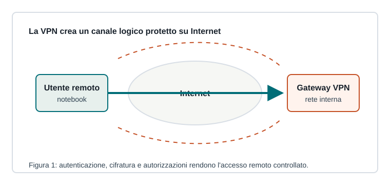

Capitoletto 5.4
Reti private e accesso sicuro
Quando utenti e servizi non sono nello stesso edificio, l'accesso deve essere protetto da autenticazione, cifratura e regole precise.

VPN
Una VPN permette di raggiungere risorse private attraverso una rete non fidata, come Internet. Il traffico viene incapsulato e cifrato, mentre il gateway controlla l'identità dell'utente.
Può essere site-to-site, tra due sedi, oppure remote-access, per utenti che lavorano da fuori.
Accesso remoto
L'accesso remoto deve essere limitato ai servizi necessari. SSH, desktop remoto, pannelli di amministrazione e applicazioni interne non dovrebbero essere esposti senza controlli forti.
| Controllo | Perché serve |
|---|---|
| MFA | riduce il rischio di password rubate |
| Gruppi | assegna permessi coerenti |
| Log | ricostruisce accessi e anomalie |
| Timeout | limita sessioni dimenticate aperte |
Zero trust
Il modello zero trust parte dall'idea che nessuna richiesta sia automaticamente fidata solo perché proviene dalla rete interna. Ogni accesso va verificato in base a identità, dispositivo, contesto e risorsa richiesta.
Buone pratiche per utenti mobili
Dispositivi aggiornati, cifratura del disco, blocco schermo, backup, connessioni sicure e attenzione al phishing sono parte della sicurezza di rete. Il punto debole spesso non è il cavo, ma l'account compromesso.
Concedi accesso solo alle risorse necessarie, verifica l'identità e registra gli eventi importanti.
Ripasso
Che cosa protegge una VPN?
Protegge il traffico in transito e controlla l'accesso alla rete privata, ma non rende automaticamente sicuro il dispositivo dell'utente.
Perché l'MFA è importante?
Perché aggiunge un secondo fattore oltre alla password e riduce l'impatto del furto di credenziali.